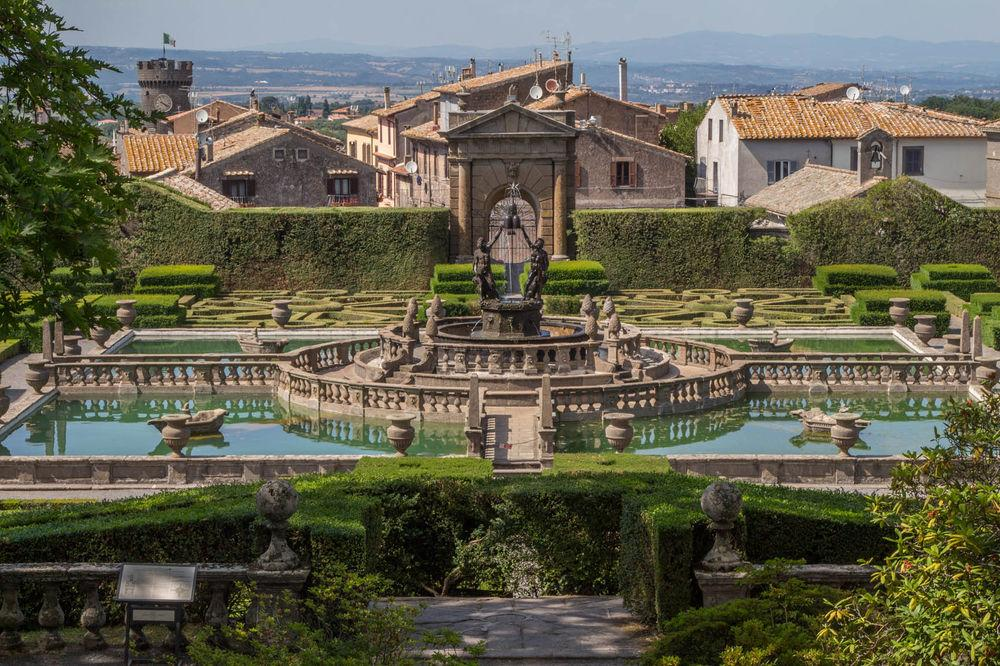
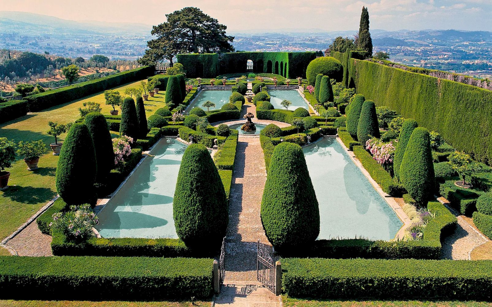
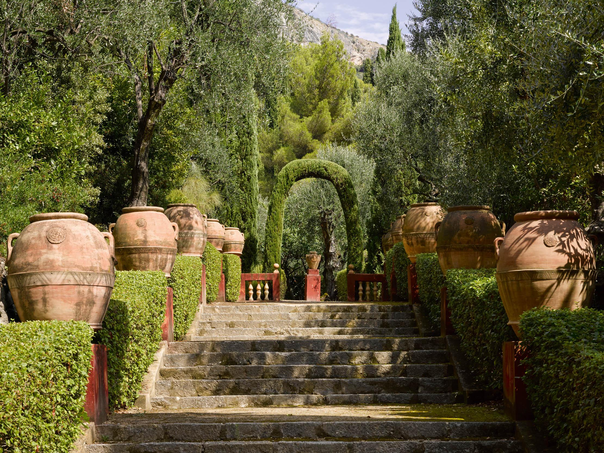
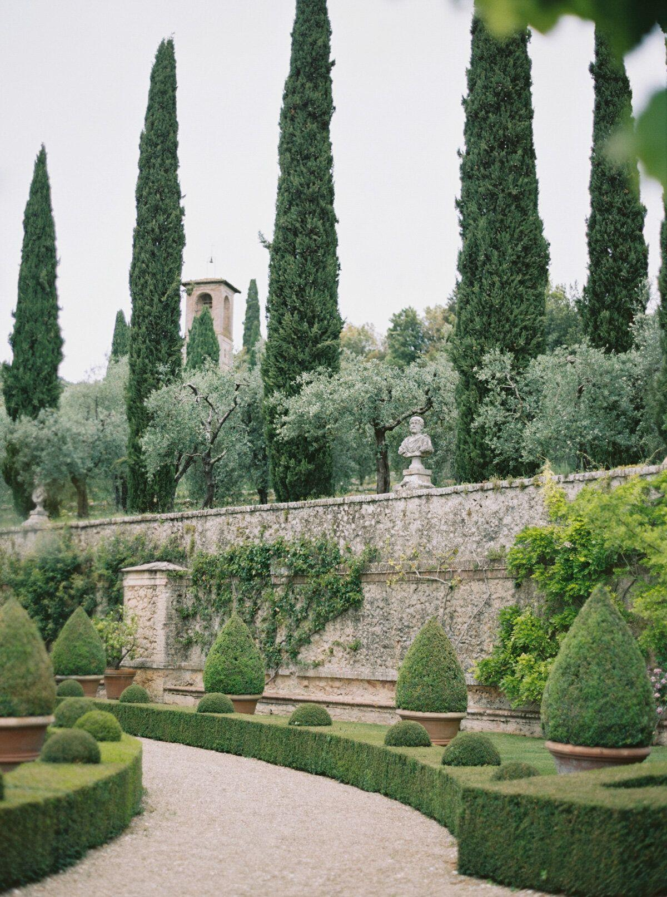
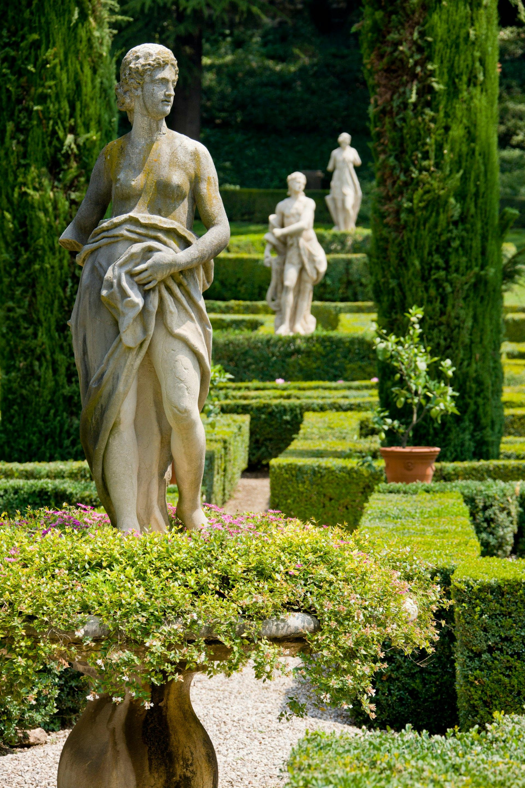
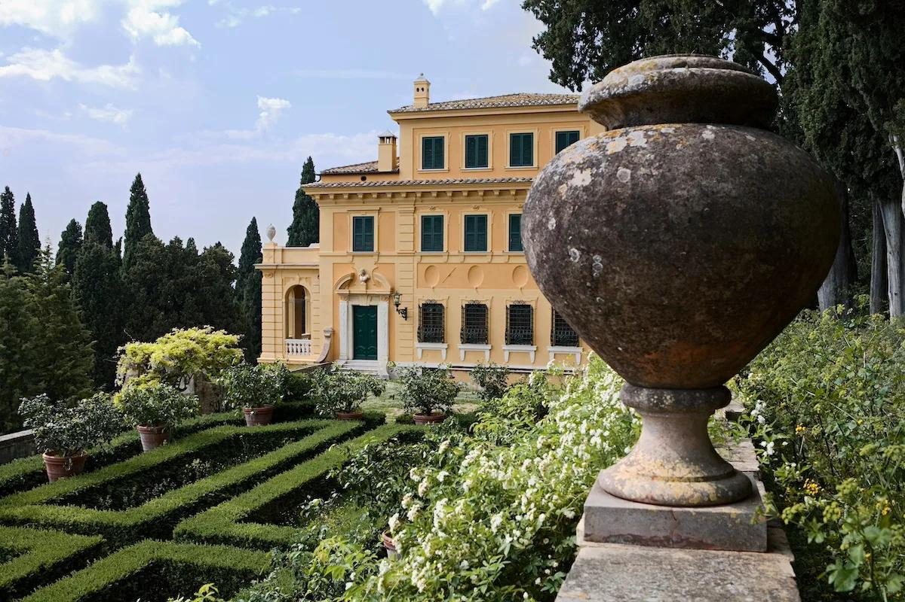
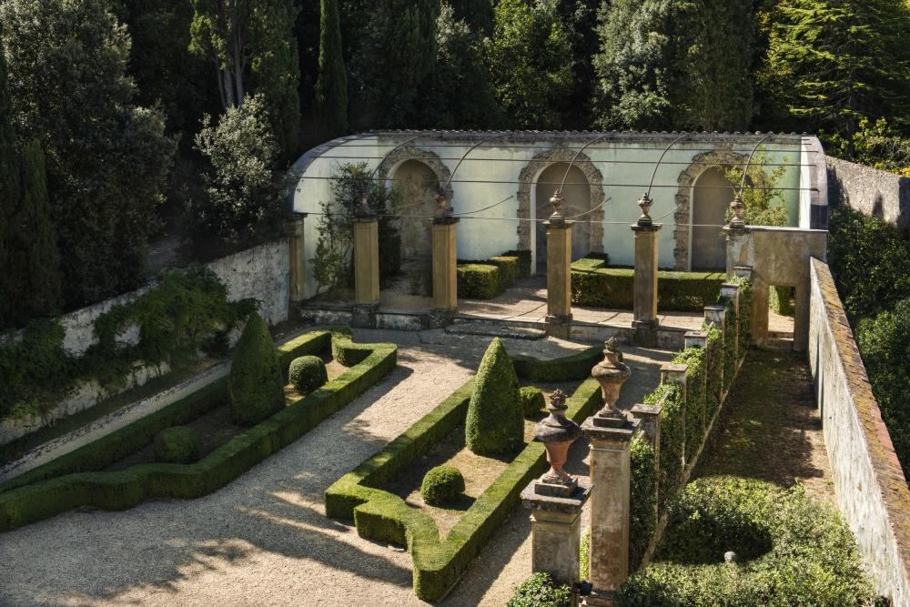
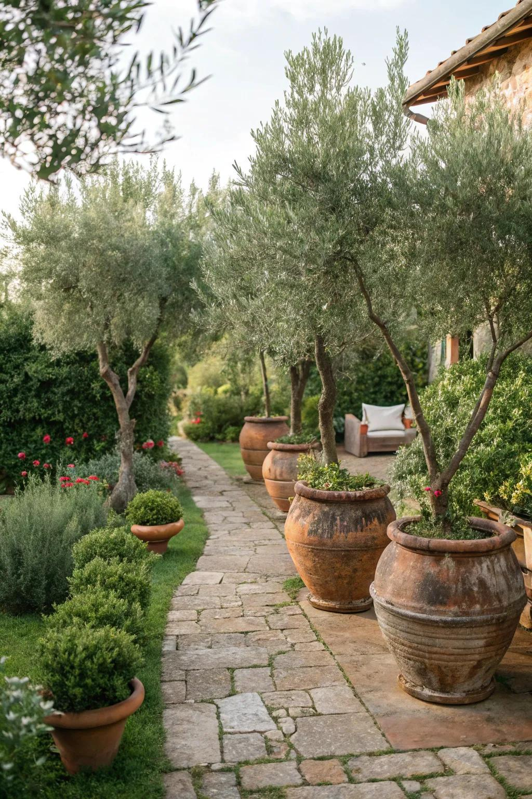
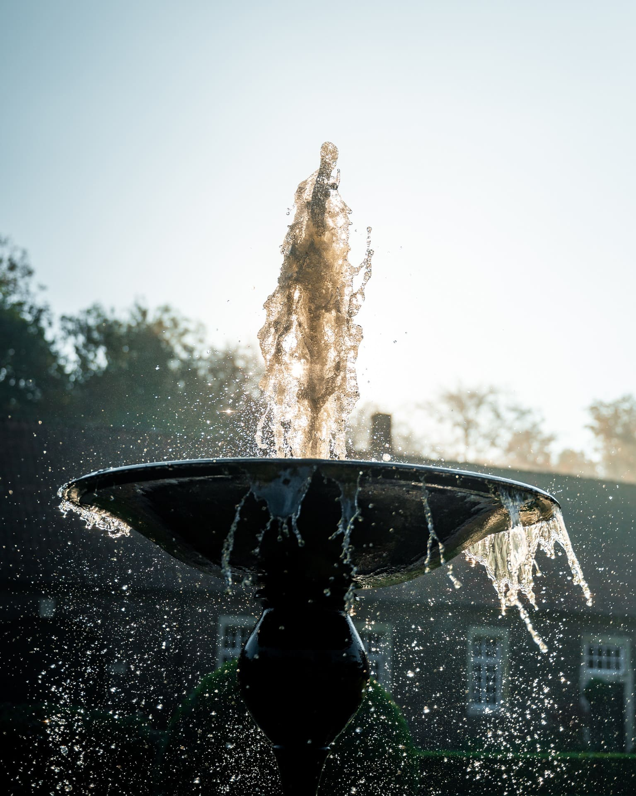

Florentine Garden Design

Italian garden design is rooted in the relationship between architecture, geometry, water, stone, evergreen structure and the surrounding landscape. From the formal Renaissance gardens of central Italy to the more relaxed gardens of Tuscany, the Italian approach combines order and symmetry with an appreciation for age, weathering and the natural landscape. The style is particularly adaptable to the Okanagan because both regions can experience hot, dry summers, strong sunlight and relatively dry growing conditions. While many Mediterranean plants require protection or cannot survive Okanagan winters, the overall design language—stone, gravel, evergreen structure, containers, herbs, clipped hedges and fountains—translates extremely well.
Boxwood Parterre Gardens

The parterre is one of the most recognizable features of formal Italian garden design. Low hedges are clipped into precise geometric patterns, creating ornamental designs that can be appreciated from an elevated viewpoint, terrace or balcony. Traditionally, boxwood was used to outline intricate shapes, including squares, diamonds, scrolls and interlocking patterns. The spaces between the hedges could be planted with flowers, herbs or low-growing groundcovers, or filled with gravel to emphasize the geometry. Gravel pathways weave between the planting beds, reinforcing the formal structure while providing practical circulation. Taller trees, particularly cypress or other narrow evergreens, can be positioned around the perimeter to create vertical emphasis and a strong architectural frame. A central focal point—such as a large urn, stone planter, sculpture, fountain or specimen plant—often anchors the composition. For the Okanagan, traditional boxwood can be supplemented or replaced with hardy plants that tolerate the local climate. The important element is not necessarily the specific plant but the **discipline of the clipped hedge and the clarity of the geometric pattern**. Low geometric hedges are trimmed to precision for these elegant Italian garden designs. Gravel pathways weave through greenery, lined with tall trees along the outskirts, with large plantars in the central focal point.
Tuscan

Nestled among the rolling hills of Tuscany, Italian gardens can be found around villas, farmhouses, monasteries and historic estates. Many are enclosed by old stone walls, while others overlook vineyards, olive groves and agricultural landscapes. Tuscan gardens often appear romantic and relaxed rather than excessively manicured. Their beauty comes from a combination of strong architectural structure and natural aging. Stone walls weather over time, terracotta pots develop patina, plants spill over edges and trees become increasingly important as they mature. The basic principles translate particularly well to the Okanagan. Dry-stone walls, gravel paths, evergreen hedges, ornamental grasses, herbs, containers and drought-tolerant perennials can all create a Mediterranean atmosphere. Some delicate Mediterranean plants, however, will require special consideration because the Okanagan experiences much colder winters than Tuscany. Rather than attempting to reproduce Tuscany plant-for-plant, the better approach is to reproduce its structure, materials, colour palette and atmosphere using locally hardy plants. Nestled in the rolling hills of Tuscany, tucked in walled cites, and overlooking the landscapes are the romantic gardens of Italy. Many of the same designs and can transfer to the Okanagan, apart from a few delicate types of Mediterranean climate plants.
Italian Garden Design
Cypress trees

Tall, narrow cypress trees provide one of the strongest visual signatures of the Italian landscape. Their vertical form contrasts beautifully with horizontal lawns, terraces, stone walls and clipped hedges. They can be used to: Frame entrances and gates, Mark the beginning of an avenue, Emphasize architectural features, Create a strong vertical focal point, Line pathways, Lead the eye toward a distant view, Provide punctuation within a formal garden, The classic Italian image of a row of cypress trees leading toward a villa demonstrates an important principle: trees can function as architecture. Where true Mediterranean cypress is unsuitable for a particular Okanagan location, similar narrow, columnar evergreen forms can provide the same visual effect.
Sculptures

Sculpture gives an Italian garden a sense of permanence and history. Classical figures, busts, urns, lions, animals and architectural fragments were commonly incorporated into formal gardens. Rather than simply being decorative objects, sculptures often act as **visual destinations** at the end of an avenue, within a parterre or beside a fountain. Weathered stone is particularly effective because it introduces age and character. A sculpture does not need to look new or perfect; **patina, moss, lichen and weathering can enhance the Mediterranean aesthetic**. For a contemporary garden, a single substantial sculpture can often have greater impact than numerous small ornaments.
Evergreen

Evergreens are fundamental to Italian garden design because they provide structure throughout the year. In a climate such as the Okanagan, evergreen planting is especially valuable because it gives the garden a permanent framework around which seasonal plants can change. Evergreens can be used as: Formal hedges, Screens, Garden-room dividers, Pathway borders, Topiary, Architectural specimens, Background planting, Yew is particularly useful for formal clipping where conditions allow. Holly and Phillyrea can contribute a Mediterranean character in suitable climates and protected locations. The principle is to create a permanent green framework, then layer flowering plants, herbs and annuals within it. As many evergreens grow throughout the Okanagan, adding hedges, and arranging growing containers are important in the Italian style. Yew trees, holly or phillyrea are good additions as well.
Antique Stones

Stone is one of the most important materials in an Italian garden. Earth-toned, regionally sourced stone can create a relaxed and authentic appearance while connecting the garden to its surroundings. Stone walls, steps, terraces, paving and retaining walls provide the architectural foundation of the garden. The use of aged and weathered materials is particularly effective. Antique-looking stone pots, old urns, weathered columns and reclaimed architectural fragments can introduce a sense of history. Rather than making every surface new and pristine, Italian gardens often celebrate the passage of time. For an Okanagan garden, locally sourced stone is especially appropriate because it connects the Mediterranean-inspired design to the regional landscape rather than creating an artificial imitation of Italy. earth toned stones, regionally sourced is an excellent way to achieve the relaxed, unique and interesting aesthetic. Adding antique statues, stone pots and weathered columns should seriously be taken into consideration when creating a Mediterranean look.
Herb Gardens

Herbs are an essential part of the Italian garden because they combine **beauty, fragrance and usefulness**. A formal herb garden can be arranged geometrically within a parterre, while a more relaxed Tuscan garden may allow herbs to spill between stone walls, paths and containers. Raised stone beds, terracotta pots and geometric planting beds are particularly appropriate.
Rosemary
Rosemary provides evergreen foliage, fragrance and small flowers. Its Mediterranean character makes it one of the most recognizable plants for an Italian-style garden. In colder Okanagan locations, rosemary may require protection or container culture so that it can be overwintered in a sheltered location.Lavender
Lavender is exceptionally well suited to the visual language of a Mediterranean garden and can be particularly successful in dry, sunny Okanagan conditions. Its grey-green foliage, purple flowers and strong fragrance work beautifully beside stone, gravel and terracotta. Lavender can be planted in drifts, used to line pathways or incorporated into formal geometric beds.Lovage
Lovage is a tall, architectural herb with foliage reminiscent of celery. Its height makes it useful for adding vertical interest to an herb garden and creating a transition between lower herbs and taller perennial planting.Marjoram
Marjoram provides delicate foliage and small flowers while contributing the characteristic fragrance of an Italian kitchen garden. It works particularly well along pathways and among other low-growing culinary herbs.Chives
Chives provide neat clumps of green foliage and attractive spherical flowers. Their compact habit makes them particularly useful for **formal herb borders and parterres**, where their rounded flower heads contrast with clipped hedges.Thyme
Thyme is one of the ideal plants for a gravel or Mediterranean-style garden. It remains relatively low-growing and can be used between paving stones, along pathways or cascading over the edges of raised beds. Its tolerance of dry conditions makes it especially useful in Okanagan-inspired Italian gardens.Oregano
Oregano provides both culinary value and attractive foliage and flowers. It can be allowed to spread naturally through informal herb beds or used as a softening plant around stonework.Sage
Sage is particularly valuable for its **grey-green foliage**, which complements the muted colours of stone, gravel and terracotta. Its foliage creates visual interest even when few plants are flowering and reinforces the dry-garden character of the design.The Character of the Italian Garden

The Italian garden is ultimately about structure and atmosphere. Its strongest elements are: Geometry — clear shapes and organized spaces Evergreens — year-round structure Stone — permanence and connection to place Water — sound, reflection and movement Sculpture— art and focal points Cypress forms — vertical architecture Herbs — fragrance, beauty and usefulness Gravel — texture and practical circulation Containers — movable architectural accents Patina — age, weathering and romance The most successful Okanagan interpretation would not attempt to recreate Tuscany literally. Instead, it would take the Italian design vocabulary and combine it with hardy regional plants and locally sourced materials. The result can be a garden that feels Mediterranean, romantic and architectural while still belonging unmistakably to the Okanagan.
Fountain Gardens

Water is one of the defining elements of Italian garden design. In a hot, dry landscape, a fountain introduces **movement, sound, reflection and cooling atmosphere**. It also provides a strong focal point within an otherwise highly structured garden. Italian fountains range from elaborate architectural masterpieces to simple stone basins. A fountain can be placed: At the centre of a parterre, At the end of an avenue, against a garden wall, within a courtyard, at the centre of a formal terrace, beside a seating area, at the intersection of pathways The sound of moving water is particularly important. Even a relatively small fountain can transform the atmosphere of a garden by introducing a gentle, continuous sound. A fountain also provides an opportunity to combine several Italian elements at once: **stone, sculpture, geometry, water and planting**. For an Okanagan garden, a recirculating fountain can provide the aesthetic benefits of water without requiring a large ornamental lake or extensive water use.